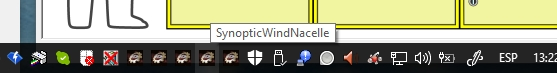

Los sinópticos especificos de esta configuración se pueden ver presentar y esconder utilizando las casillas asociadas a su listado, que aparece pulsando el botón de menú "Sinópticos" en el sinóptico de control de ejecución. Ver siguiente figura.

También se puede controlar su presencia en pantalla usando los iconos específicos que aparecen en la "Barra de Herramientas". Ver la siguiente figura.

Poniendo el cursor del ratón sobre los iconos de "ACM" se presentará un texto con el nombre del sinóptico asociado.
Pulsando con el botón izquierdo del ratón se presentará o se esconderá el sinóptico correspondiente.